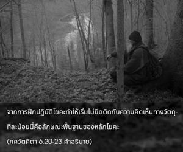
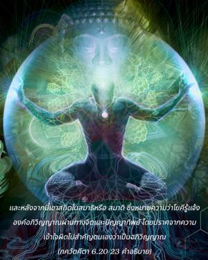
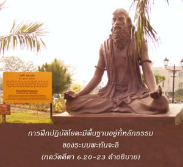
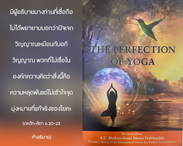

ในระดับแห่งความสมบูรณ์เรียกว่าสมาธิ จิตของเขาจะถูกควบคุมอย่างสมบูรณ์ให้ออกจากกิจกรรมตามแนวคิดทางวัตถุด้วยการฝึกปฏิบัติโยคะ ความสมบูรณ์เช่นนี้มีลักษณะคือเขาสามารถเห็นตนเองด้วยจิตที่บริสุทธิ์ และมีความร่าเริงยินดีอยู่ในตนเอง ในระดับแห่งความร่าเริงนั้นเขาสถิตในความสุขทิพย์ที่ไร้ขอบเขต รู้แจ้งผ่านทางประสาทสัมผัสทิพย์ เมื่อสถิตเช่นนี้จะไม่มีวันออกห่างจากความจริง และจากการได้รับสิ่งนี้เขาคิดว่าไม่มีอะไรที่จะยิ่งใหญ่ไปกว่า เมื่อสถิตในสถานภาพนี้จะไม่มีวันสั่นคลอนแม้จะอยู่ท่ามกลางความยากลำบากอย่างใหญ่หลวง นี่คือเสรีภาพอันแท้จริงจากความทุกข์ทั้งปวงที่เกิดขึ้นจากการมาสัมผัสกับวัตถุ




จากการฝึกปฏิบัติโยคะทำให้เริ่มไม่ยึดติดกับความคิดเห็นทางวัตถุทีละน้อย นี่คือลักษณะพื้นฐานของหลักโยคะ และหลังจากนี้เขาสถิตในสมาธิ ซึ่งหมายความว่า โยคีรู้แจ้งองค์อภิวิญญาณผ่านทางจิต และปัญญาทิพย์โดยปราศจากความเข้าใจผิดไปสำคัญตนเองว่าเป็นอภิวิญญาณ การฝึกปฏิบัติโยคะมีพื้นฐานอยู่ที่หลักธรรมของระบบ ปตญฺชลิ มีผู้อธิบายบางท่านที่เชื่อถือไม่ได้พยายามบอกว่าปัจเจกวิญญาณเหมือนกับอภิวิญญาณ พวกที่ไม่เชื่อในองค์ภควานฺคิดว่าสิ่งนี้คือความหลุดพ้น แต่ไม่เข้าใจจุดมุ่งหมายที่แท้จริงของโยคะ ระบบ ปตญฺชลิ มีการยอมรับความสุขทิพย์ในระบบ ปตญฺชลิ แต่พวกที่เชื่อว่าเป็นหนึ่งเดียวกันจะไม่ยอมรับความสุขทิพย์นี้ เนื่องจากกลัวอันตรายที่จะมีต่อทฤษฏีความเป็นหนึ่งเดียวกัน ความเป็นสิ่งคู่ระหว่างความรู้ และผู้รู้พวกนี้ไม่ยอมรับ แต่ในโศลกนี้ความสุขทิพย์ซึ่งรู้แจ้งผ่านทางประสาทสัมผัสทิพย์เป็นที่ยอมรับ และ ปตญฺชลิ มุนิ ผู้อธิบายระบบโยคะที่มีชื่อเสียงได้ยืนยันสนับสนุนจุดนี้ นักปราชญ์ผู้ยิ่งใหญ่ท่านนี้ได้ประกาศใน โยค-สูตฺร (4.34) ของท่านว่า ปุรุษารฺถ-ศูนฺยานำ คุณานำ ปฺรติปฺรสวห์ ไกวลฺยํ สฺวรูป-ปฺรติษฺฐา วา จิติ-ศกฺติรฺ อิติ
จิติ-ศกฺติ หรือกำลังภายในนี้เป็นทิพย์ ปุรุษารฺถ หมายถึง ศาสนาวัตถุ การพัฒนาเศรษฐกิจ การสนองประสาทสัมผัส ในที่สุดจะพยายามมาเป็นหนึ่งเดียวกับองค์ภควานฺ “ความเป็นหนึ่งเดียวกับองค์ภควานฺ” นี้เรียกว่า ไกวลฺยมฺ โดยผู้ที่เชื่อว่าเป็นหนึ่งเดียวกัน แต่ ปตญฺชลิ กล่าวว่า ไกวลฺยมฺ นี้เป็นกำลังภายใน หรือพลังทิพย์ซึ่งทำให้สิ่งมีชีวิตสำเหนียกถึงสถานภาพพื้นฐานของตน ในคำดำรัสขององค์ ศฺรี ไจตนฺย ระดับของสภาวะนี้ เรียกว่า เจโต-ทรฺปณ-มารฺชนมฺ หรือการทำความสะอาดกระจกแห่งจิตใจที่สกปรก “ความใสบริสุทธิ์” นี้อันที่จริงคือความหลุดพ้น หรือ ภว-มหา-ทาวาคฺนิ-นิรฺวาปณมฺ ทฤษฏี นิรฺวาณ โดยพื้นฐานมีลักษณะเช่นเดียวกันกับหลักนี้ ใน ภาควต (2.10.6) สิ่งนี้เรียกว่า สฺวรูเปณ วฺยวสฺถิติห์ โศลกใน ภควัท-คีตา ได้ยืนยันสถานการณ์นี้ไว้เช่นกัน
หลังจาก นิรฺวาณ หรือการจบสิ้นทางวัตถุจะมีปรากฏการณ์แห่งกิจกรรมทิพย์ หรือการอุทิศตนเสียสละรับใช้องค์ภควานฺเรียกว่า กฺฤษฺณจิตสำนึก ในคำพูดของ ภาควตมฺ สฺวรูเปณ วฺยวสฺถิติห์ นี่คือ “ชีวิตอันแท้จริงของสิ่งมีชีวิต” มายา หรือความหลงคือสภาวะของชีวิตทิพย์ที่มีมลทินจากเชื้อโรคทางวัตถุ ความหลุดพ้นจากเชื้อโรคทางวัตถุนี้ไม่ได้หมายความว่าทำลายสถานภาพพื้นฐานนิรันดรของสิ่งมีชีวิต ปตญฺชลิ ยอมรับเช่นเดียวกันนี้ด้วยคำพูดของท่านว่า ไกวลฺยํ สฺวรูป-ปฺรติษฺฐา วา จิติ-ศกฺติรฺ อิติ คำว่า จิติ-ศกฺติ หรือความสุขทิพย์นี้คือชีวิตที่แท้จริง ได้ยืนยันไว้ใน เวทานฺต-สูตฺร (1.1.12) ว่า อานนฺท-มโย ’ภฺยาสาตฺ ความสุขทิพย์ตามธรรมชาตินี้คือจุดมุ่งหมายสูงสุดของโยคะ และบรรลุได้โดยง่ายดายด้วยการปฏิบัติอุทิศตนเสียสละรับใช้หรือ ภกฺติ-โยค จะอธิบาย ภกฺติ-โยค อย่างชัดเจนในบทที่เจ็ดของ ภควัท-คีตา
ระบบโยคะที่อธิบายในบทนี้จะมีสมาธิ อยู่สองประเภท เรียกว่า สมฺปฺรชฺญาต-สมาธิ และ สมฺปฺรชฺญาต-สมาธิ เมื่อสถิตในตำแหน่งทิพย์ด้วยการศึกษาวิจัยทางปรัชญาต่างๆ กล่าวไว้ว่าเขาได้บรรลุ สมฺปฺรชฺญาต-สมาธิ ใน อสมฺปฺรชฺญาต-สมาธิ จะไม่มีความสัมพันธ์กับความสุขทางโลกอีกต่อไป เพราะอยู่เหนือความสุขต่างๆ ที่ได้รับจากประสาทสัมผัส เมื่อโยคีสถิตในสถานภาพนี้จะไม่มีวันสั่นคลอน หากโยคีไม่สามารถบรรลุถึงตำแหน่งนี้ได้จะถือว่าไม่ประสบความสำเร็จ การปฏิบัติโยคะที่เรียกกันในปัจจุบันนี้ประกอบไปด้วยความสุขทางประสาทสัมผัสต่างๆ นานาซึ่งเป็นสิ่งที่ขัดกัน โยคีที่ปล่อยตัวไปในเพศสัมพันธ์ และสิ่งเสพติดเป็นโยคีจอมปลอม แม้แต่พวกโยคีที่หลงใหลไปกับสิทฺธิ (อิทธิฤทธิ์) ในระบบโยคะก็มิได้สถิตอย่างสมบูรณ์ หากโยคีหลงใหลไปกับผลข้างเคียงของโยคะจะไม่สามารถบรรลุถึงระดับแห่งความสมบูรณ์ ดังที่ได้กล่าวไว้ในโศลกนี้ ฉะนั้น บุคคลที่ปล่อยตัวไปในการอวดวิธีปฏิบัติท่ากายกรรมต่างๆ หรือ สิทฺธิ ควรรู้ไว้ว่าจุดมุ่งหมายของโยคะได้สูญหายไปในทางนั้นแล้ว
การฝึกปฏิบัติโยคะที่ดีที่สุดในยุคนี้ คือ กฺฤษฺณจิตสำนึก ซึ่งไม่ยุ่งยาก บุคคลในกฺฤษฺณจิตสำนึกมีความสุขในอาชีพของตน และไม่ปรารถนาความสุขอื่นใด มีอุปสรรคมากมายในการปฏิบัติ หฐ-โยค, ธฺยาน-โยค และ ชฺญาน-โยค โดยเฉพาะในยุคแห่งความขัดแย้งนี้ แต่จะไม่มีปัญหาในการปฏิบัติ กรฺม-โยค หรือ ภกฺติ-โยค
ตราบเท่าที่ยังมีร่างวัตถุอยู่ เราจะต้องตอบสนองความต้องการของร่างกาย เช่น การกิน การนอน การป้องกันตัว และเพศสัมพันธ์ แต่ผู้ที่อยู่ใน ภกฺติ-โยค ที่บริสุทธิ์ หรือในกฺฤษฺณจิตสำนึก จะไม่กระตุ้นประสาทสัมผัสขณะที่สนองตอบความต้องการของร่างกาย แต่ยอมรับสิ่งจำเป็นที่สุดของชีวิต โดยพยายามจะใช้สิ่งไม่ดีที่ได้รับมาให้ได้ดีที่สุด และเพลิดเพลินกับความสุขทิพย์ ในกฺฤษฺณจิตสำนึกจะมีอุปสรรคต่อเหตุการณ์ต่างๆ ที่เกิดขึ้น เช่น อุบัติเหตุ โรคภัยไข้เจ็บ ความขาดแคลน แม้กระทั่งความตายของญาติสุดที่รัก แต่จะตื่นตัวอยู่เสมอในการปฏิบัติหน้าที่ของตนในกฺฤษฺณจิตสำนึก หรือ ภกฺติ-โยค อุบัติเหตุไม่เคยทำให้เขาบ่ายเบี่ยงไปจากหน้าที่ ดังที่กล่าวไว้ใน ภควัท-คีตา (2.14) อาคมาปายิโน ’นิตฺยาสฺ ตำสฺ ติติกฺษสฺว ภารต เขาอดทนต่อเหตุการณ์ทั้งหมดที่เกิดขึ้น เพราะทราบว่าสิ่งเหล่านี้เกิดขึ้นมาแล้วจะดับไป มันไม่มีผลกระทบต่อหน้าที่ของตน ด้วยวิธีนี้จะทำให้บรรลุถึงความสมบูรณ์สูงสุดในการฝึกปฏิบัติโยคะ